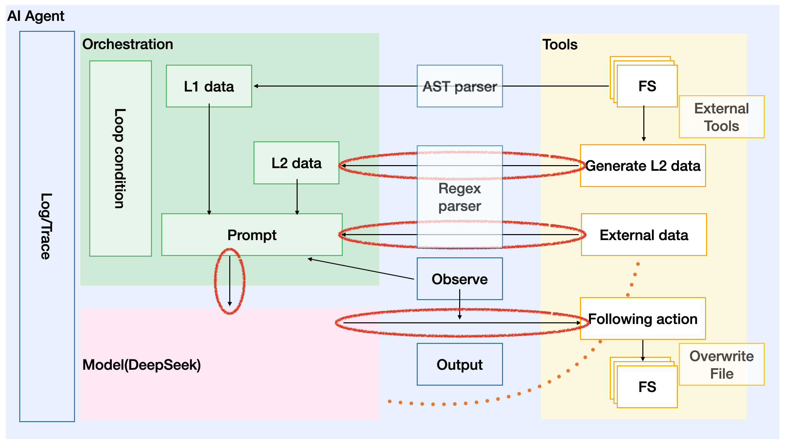
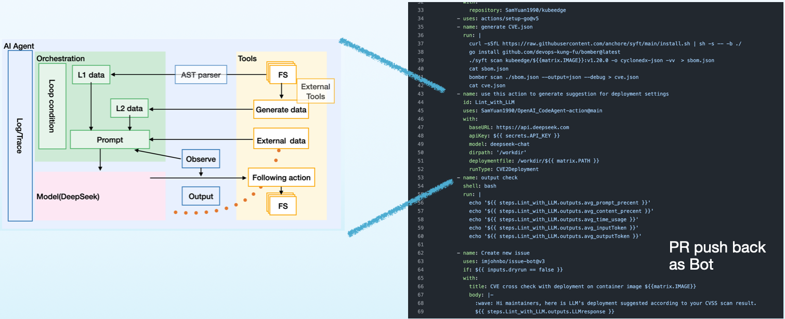

From an engineering perspective, for the tasks in our pipeline today, we need to gather sufficient information and construct a series of specific instructions. By directly issuing these instructions to the large model, we can avoid fine-tuning and RAG (Retrieval-Augmented Generation), thereby integrating the large model into the pipeline. This approach enables intelligent solutions to specific problems, ultimately achieving the goal of enhancing production efficiency.
Modern software engineering follows a structured path—from gathering requirements to deploying the final product. Copilot has reshaped how developers transition from ideas to code, yet a critical gap remains: the untapped potential of automated intelligence in CI/CD pipelines.
Today’s CI/CD pipelines handle a vast amount of structured data—source code, test results, security scans, and dependency reports. However, these artifacts, generated by existing tools, are underutilized. They provide raw data but lack deeper insights.
Our project enhances CI/CD workflows by integrating intelligent automation, transforming existing toolkits into a context-aware assistant. This enables: ✅ More effective security assessments ✅ Proactive insights that support engineering decisions
This isn’t just about automation—it’s about making CI/CD pipelines more adaptive, efficient, and responsive.
üîí As our scan result related with vulnerability, we hidden all details in result to avoid hacker exploitation.
We define metrics for evaluate our jobs’ effectively.
| Metric | Document generate | Deployment suggestion | Code enhancement |
|---|---|---|---|
| Prompt percent | 16% | 5.6% | 54.2% |
| Content percent | 83% | 93% | 45% |
| Output Token | 430 | 1207 | 742 |
| LLM response time(second) | 26 | 61 | 43 |
| Category | Tools | Language/Target | Scenario | Example |
|---|---|---|---|---|
| Unit Test | Jest | JavaScript | Auto-generate unit tests to improve coverage | Link |
| Doc Gen | Go | Generate GoDoc comments via AST analysis | Link | |
| CVE Scan with Pod security | Syft, Bomber | deployment.yaml | Detect CVEs and suggest Pod Security Policy improvements | Link |
| CVE Scan with project | Syft, Bomber | n/A | Detect CVEs and the affect to your repo | Link |
| Code Vulnerabilities Scan | C | Detect common CVE reasons as null pointer for code | Link |
In this part, we just scan “hello world” deployment yaml, either they are used for integration test or quick start for user. No production deployment.


üå¥ You‚Äôre on a sun-soaked beach, sipping a mojito, watching the waves roll in. Carefree. Relaxed. Your code? It‚Äôs running itself in‚Äîan intelligent pipeline scanning CVEs, analyzing risks, and auto-adjusting deployments.
Now, contrast that with this:
üíª You‚Äôre hunched over your desk, chugging coffee at 2 AM, manually digging through security reports, tweaking YAML files, and writing function doc strings one by one.
The choice is yours. Hack smarter, not harder. Let AI do the grunt work while you enjoy the sunset.
On one hand, referencing the ReAct, LLMs generate reliable, hallucination-free responses when provided with sufficient ground truth data. With reasoning technologies like Chain of Thought (CoT), LLMs can analyze patterns, detect anomalies, and surface actionable insights.
On the other hand, modern software scanning tools already generate structured data, but they lack the ability to interpret, connect, and act on it.
üî• Can we extract real intelligence‚Äîwithout RAG, without fine-tuning, just results? 
Let’s shake hands, make it happen. By ground truth as source code or structured reports, with a clear human intention, ask LLM to deal with the task. Using Google’s AI Agent design style to explain our design, we implements tools read data from both source code and structured reports, with prompt as prefix represent human intention.
üî• Can we upgrade CI/CD pipelines from passive scanners to AI-driven assistants?  Yep, we package this AI agent as a github action as a part of CI/CD pipeline code!